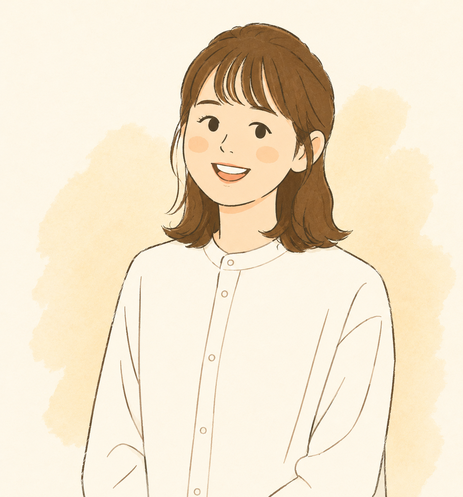

About Us
簡實制所致力於將想法轉化為清晰、實用且可持續運作的數位體驗。
設計不需要複雜，而是回到為人所用。
讓簡實制所可以陪伴個人品牌與工作室經營者，將心中的想法，轉化為清晰且可被使用的數位成果。
Lessary Studio，取自 Less + Necessary——只留下必要的，才是真正有用的設計。
讓每一次設計，都能少一點負擔、多一點真實；留下真正重要的事，讓品牌能被看見，也能長久使用。

Founder
簡實制所 創辦設計師
嗨，我是 Laya，簡實制所的設計師，擁有 13+ 年設計經驗，曾參與科技、房地產與電商等領域專案。
簡實制所是一人的設計工作室，每個專案都由我親自完成，從溝通到交付全程負責。專注陪伴正在建立品牌、或希望穩定經營的人，一起把想法整理成清晰且能被使用的數位成果。
也因此每個時期能承接的專案數量有限，如有合作需求，歡迎先來聊聊唷。
Vision
2017
前同事邀請協助設計專案，開始踏入自由接案，在不同合作中累積經驗，協助朋友與客戶完成各式設計需求，逐步建立紮實而多元的實作基礎。
2023
過去參與過許多不同類型的專案，大多數時候是由業務接洽、企劃規劃，再進入設計執行。2023 年我參加了 BreakThrough Starter 課程，在課程中發現自己除了設計專業外，也具備幫助他人整理商業想法與規劃執行的能力。 隨著 AI 技術快速發展，我開始更深刻地重新思考設計師真正不可取代的價值。設計不只是完成畫面或使用工具，而是一種理解人、整理想法與解決問題的方式，只是當時仍停留在思考階段。
2026
2025年底，經歷了職涯上的重要轉變，決定停下腳步，認真問自己真正想做的事。此時，2023 年重新思考設計價值的那些理念，再次浮現 —— 設計的本質是理解人、整理想法與解決問題，而非僅僅交付畫面。這讓我想要試著往「幫助他人」的方向前進。
在一次異業合作中，我接觸到一位業者的商品與她零散的網頁下單資訊，看見她有很好的想法，卻因忙碌而難以整理和呈現，那一刻我非常想幫助她。於是我自告奮勇，以客戶的視角親身投入，將她的下單流程從零散的資訊開始整理、優化並規劃，並與她提案直到專案正式上線。
那次經驗讓我深刻體會到：比起單純交付設計作品，我更想幫助那些「心中有想法、想做點事情，卻因為忙碌而無暇經營品牌」的人。
於是我決定回到設計最本質的初衷——簡單而實際。
「簡實制所」因此正式成立。
Closing
有時候不是沒有想法，而是忙碌的生活與工作，讓許多想做的事一直停留在心裡。我希望陪伴那些想開始品牌、建立服務或分享理念的人，把模糊的想法整理成清晰的方向，再一步一步變成真正可以被看見、被使用的成果。讓設計不只是好看，而是真正回到為人所用。
了解服務內容